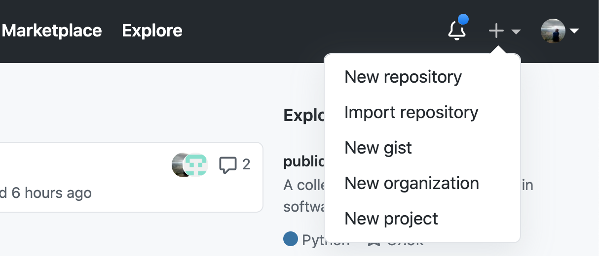

So far you have done a LOT!! You’ve installed a programming language and IDE, you’ve mastered some terminal commands, you’ve installed a version control system, and created a GitHub Account. All in the first 2 days of class!
The assignment for today is to set up your first project using the R Terminal, Github, and RStudio Projects.
For the purposes of GEOG 176A, the things you’ll need to do with GitHub are:
- Create new GitHub repositories (INITIALIZE) and/or copy existing ones (FORK)
- Get that repo talking with your local R/RStudio (CLONE)
- Modify files on your computer
- Push them back to your version of the repo (STAGE/COMMIT/PUSH workflow)
Create
The first thing we want to do is create a new repository on your GitHUb account. After logging in, look in the upper right hand corner of your account for the “+” button. Click on that and select “New Repository”:

This will create a new repository and will prompt a new window that looks like:
Here we can fill in the metadata for our new repo:
- Let call it:
hello-world - Give it an informative description:
My first GitHub Repository! - Keep it “Public”
- Initialize it with a README
- Keep .gitignore and License as NONE
Awesome! You created your own first Github Repository
Connect to RStudio
We now need to ensure that RStudio can communicate with that GitHub Repository. By doing this we will be able sync our local files with a remote copy, make changes/additions, and the publish those changes back to remote repo. This “pulling” from and “pushing” to is the basic Github workflow.
To practice this, lets walk through the steps of cloning a copy of the empty “hello-world” repo.
- first navigate to (
YOUR USERNAME/hello-world). - Click on the green ‘Clone or download’ button prompting a window that looks like this:
The URL listed provides a dedicated path to the repo that RStudio can use to communicate. Copy that link (easiest to click the clippy icon) and return to (or launch) RStudio.
Once in RStudio, create a new version controlled project using the Github URL
- File –> New Project –> Version Control –> Git
- To provide the metadata for this project lets do the following:
- Paste the URL you copied into the Repository URL section, and press TAB
- Keep the default Project directory name that matches the GitHub project
- Create the project as a sub directory of your
~/githubfolder created in the last activity - Optional: select ‘Open in new session’ (if you’re already working on stuff that you don’t want to close)
- Click create!
Congratulations! You just created a git-enabled project. You will know you are successful if you see the Git tab somewhere in you RStudio IDE (mine is next to “History” and “Environment”).
Structure your Project
Taking what we learned today in lecture, construct a skeleton for a project. If you think carefully you should only need 4 terminal prompts (mkdir). I will start you with the first:
Using cd to navigate, add one Rmd file and one R file in the correct directories. Use (touch/$null >) to create them.
Once you’ve built your skeleton, open your README.md from the RStudio file viewer and enter the following, replacing the ‘XXXX’ with your info:
# My first Project
## **Course**: Geography 176A
## **Name**: XXXXX
## **Year**: XXXXX
## **Major**: XXXXX
## **OS**: XXXXXHow does your structure look compared to what we discussed in lecture? Do you have a place for data? What about images? Source Code? Remember it should NOT look like my pseudo example here but rather a solid project…
Back to GitHub
You know that Git is a version control software that allows us to track changes in files. You also know GitHub is a web platform for hosting and working with git enabled projects…
Version control is kind of weird. Not only are you keeping current files, but you are keeping past versions of your files. BUT, you dont want to archive each and every little change. Instead, your versions (think snapshots) have to be determined by you through commits.
Here is a helpful illustration of this process (source):

Armed with that idea, it is time to introduce the Git tab in RStudio. If you click on the Git tab, you will see all the files that have changed from the last commit.
- To stage files, select the empty box (under ‘Staged’) next to each file
- To select all files, click in the Git tab, and click CMND+SHIFT+A (Mac) or CRTL+SHIT+A (Windows)
- Add your checked files by clicking Commit
- In the dialogue box, enter a brief commit message (e.g. “Project Structure”) and press ‘Commit’ to stage these files to git.
- Finally, press the upward green push arrow to “Push” your changes to GitHub. You may need to enter your github user.name/password the first time you do this.
If you receive no errors then you successfully staged, committed and pushed your project to YOUR USERNAME/hello-world
To make sure:
Go to GitHub and refresh the repo page.
You should see the files you recently committed and the associated rendered README. If this is true. You are done - Great work!
Assignment
For this assignment submit the URL to your hello-world repository.
And üéâ congrats üéâ! All the setup is done for this course and we are on to bigger and more fun things!
If you are interested in the idea of good coding practice, I encourage you to read Wilson, 2017
END
Prepared for Geography 176A by Daily Exercise 03